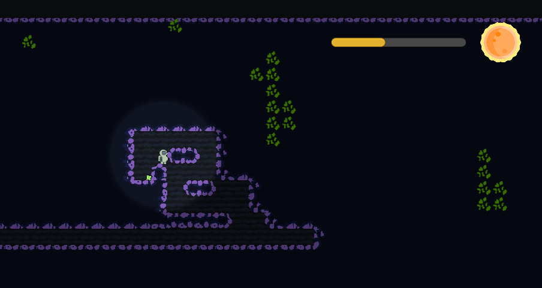

rogue planet
rogue planet

description: In an immersive, challenging, and engaging gameplay with randomized enemies and enviroment; players
can explore this mysterious planet, collecting precious minerals in hopes to repair their spaceship and escape.
process: The main focus of mine was incorporating the lighting throughout the game and adding a day-night cycle for
the enemy spawn waves. Once a timer was incorporated, I started working on the lighting source. Since we were using the default
template and not a URP (Universal Render Pipeline), applying the standard light source was impossible. The workaround used
was to add a diffuse mask to the background/layers and using a directional light source while adjusting the intensity based on
the timer. This will give the dusk/dawn/inbetween affects.
reflection: After completing this semester and having little to no group projects, this was quite the hurdle. luckily,
we all were working really well together and communicated whenever issues arose. I learned a lot in terms of developing code/games
in a group environment as well as self motivation. It was challenging to stay motivated throughout the semester when other, shorter
projects were more enticing, but keeping to the weekly stand-ups we had allowed for us to keep our focus on the smaller parts to
complete.
A larger challenge we struggled with was scope creep. We would see the developments being made throughout the term and
want to keep adding to them rather than focus on the next important issue. Although it was a struggle, we overcame it a bit by
scheduling a 'reset' meeting to get us back on track.
team members: Ewan Baxter,
Kaitlyn Archambault,
Riley Pike
language(s): c#
software used: unity
ecosim
ecosystem simulator
description: A 2D prey-preditor ecosystem simulator based on the Savitch's
'Doodlebugs'. The simulation has to stay balanced for around 100-200 generations and
cannot exceed 1000 generations. Additionally, we were to focus on and implement the four
pillars of coding, APIE (A-abstraction, P-polymorphism, I-inheritance, E-encapsulation), to make
this work.
process: Not getting too confused early on was my biggest focus, yet I still had troubles
wrapping my head around the code. Working on the polymorphism and inheritance were concepts that made
sense to me but when implementing them added a little of confusion. I started with the parent classes
and slowly built the world and child classes around them. This was followed with the implementation
of the different species' rules (i.e. where they can move, if they can eat/reproduce, etc.) and
making sure they work properly with the world class during each iteration of the simulation.

reflection: Shown above was the outcome of my simulation with 100 humans and 25 zombies at the start. This is the final generation before the simulation ended with humans prevailing. although this was one of the most challenging assignments throughout this program, it was also one of the most fun to accomplish. I was able to watch my efforts progress in real time which doesn't happen too often. I'm positive learning and implementing the four pillars of coding will stay with me no matter where my career takes me.
language(s): c
software used: clion
pizza app
cruddy pizza app
description: A pizza application with two language options, one pizza per order, and three toppings
per pizza is what was delivered. The user would be able to access all previously entered orders wih the
capabilities to both edit and delete them (CRUD).
process: Designing the application and choosing a theme took some time, but writing the event handlers
to properly pass and receive the correct data was tricky. Not only was it for the basic forward/backward navigation
of the app, but also when it came to adding the database to it. I focused on the basic events to start off and
added the most complicated ones to prevent getting too confused.
Throughout the course, testing your applications for all potential bugs was of importance. This forced me to spend
more time than normal verifying each button/feature to work as intended. Easier said than done when working in
an unfamiliar language.
reflection: The idea was to push myself and to leave my comfort zone. As a bilingual french and english
speaker, I wanted to choose a less familiar language to translate the app to, which led me to mandarin. luckily
I have friends and family who speak it and requested their assistance when it came to that, but it was a lot of
fun learning more about the language through pizza.
language(s): java, xaml
software used: android studio (emulated on a pixel3)
music database
chinook music database
description: Using the chinook music database, we were tasked with creating a useful application
that allows the user to maneuver the database with ease.
process: We were given the .sql file for the chinook database and had to set it up using a scaffolding
command. It was required to generate the database context and the individual .cs files per table in two separate
folders, as well as relocating the scaffold-command to the app.config file for safe accessing of the database
information.

reflection: I very much enjoyed this assignment as it let me explore more options when building desktop applications while adding further usability to them with data binding. I'm expecting to be able to apply what I've learned to future projects at work.
language(s): c#, xaml, sql, linq
software used: visual studio, .net, entity framework